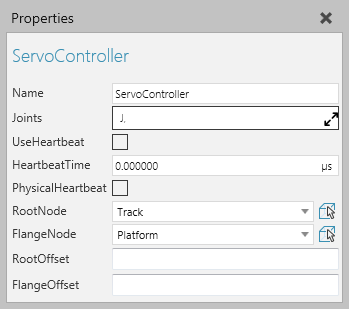

A Servo Controller allows you configure and control independent joints and mechanisms using forward kinematics.

| Name | Description |
| Name | Defines the name of the controller. |
| Joints | Defines a list of joints defined in nodes used by the controller. |
| UseHeartbeat | Turns on/off the use of a pulse to drive events. |
| HeartbeatTime | Defines the time between each pulse (in seconds) if UseHeartbeat is enabled. |
| RootNode | Defines the link/node that acts as the base of the mechanical structure. |
| FlangeNode | If you are using an external axis system, defines the link/node used as a mounting plate for other kinematic structures. If you are using a track, defines the link/node used as the carriage. |
| RootOffset | Defines an offset from RootNode origin in the kinematics. Generally, this is used to start kinematics from the center of a node instead of its side. |
| FlangeOffset | Defines an offset from FlangeNode origin in order to properly mount other kinematic structures. |